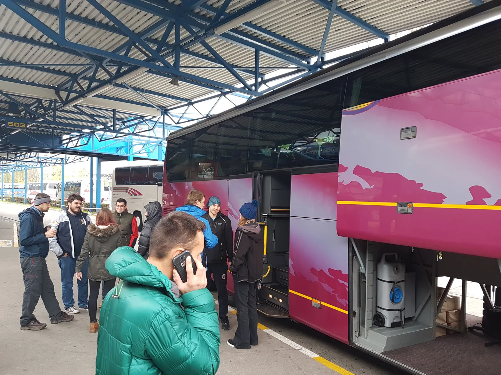

Kako smo se (dobro) proveli na Skupu speleologa 2017.
Priča sa dvoumljenjem da li smo bili na Skupu speleologa ili srednjoškolskoj ekskurziji. Kako god, bilo nam je zabavno. :)

Speleološka godina u životu jednog odsjeka (društva) najčešće se zaključi odlaskom na Skup speleologa Hrvatske, iako to kod Velebitaša nije još ni blizu kraja jer se svaki vikend (uključivo i prijelaz stare na novu godinu) računa u godišnju špiljariju. Skup je prilika za prezentirati značajne rezultate istraživanja, ekspedicija, postera itd, itd... osim toga i druženje među špiljarskom populacijom nosi svoju čar. To svi znamo pa tu daljnji opisi prestaju.
Ove godine domaćini su bili SO HPD Sniježnica, što je značilo da će na skup valjati potegnuti sve do Dubrovnika, odnosno Čilipa.
[caption id="attachment_1680" align="alignnone" width="2032"] Na terminalu za ukrcaj robe i putnika[/caption]Najave sa službenih stranica skupa ponukale su i one koji su se predomišljali o dalekom putu, a one su uključivale obilazak gradskih zidina, žičaru na Srđ, posjet muzejima – sve samo sa čarobnom akreditacijom – odnosno mukte - pa nas se tako nakupilo i za jedan autobus u kojem su špiljari Velebita zauzeli najveći broj mjesta. Put do sada najdaljeg mjesta nekog skupa nije se pokazao napornim, štoviše nije nas ni obilazak Svetog Roka zbog bure previše zamarao.
[caption id="attachment_1681" align="alignnone" width="2032"] Zadnji dio busa naseljen uglavnom velebitašima[/caption]Nakon desetak sati udobnog razvlačenja po udobnom busu iskrcali smo se ispred osnovne škole u Čilipima pa požurili naći slobodno mjesto. I ugrabili smo doslovce zadnje „rupe“ između karimata po razredima i u sali za video projekcije, jer se već ujutro spavalo po hodnicima i stepeništima (dok smo krmeljavi tumarali do zahoda pitali smo se od kud i kad su svi ovi ostali došli?).
[caption id="attachment_1682" align="alignnone" width="2032"] Crkva Sv. Nikole u Čilipima[/caption]Iako je ove godine bilo nešto manje postera sa najatraktivnijim godišnjim speleološkim rezultatima, Karlovčani su nadoknadili svojom izložbom o povijesti karlovačke speleologije, 15 godina Ursus spelauesa, a povijesni dio zaokružen je i sa roll-up banerima KS HPS - „Istraživači hrvatskog podzemlja“. Naš, grafički doprinos bio je poster sa prikazom cijele 2017-e špiljarsko-velebitaške godine, uz sve druge izlete – od planinarskih pothvata, preko „bjelosvjetskih“ avantura, sve do brčkanja u čarima špiljskih i izvorskih kupanaca. Za to je trebalo dosta čeprkati po zapisnicima sa sastanaka i brdima fotografija, ali rezultat toga na formatu A0 sada se ponosno smjestio u prostorijama SOV-a. Trud oko toga dali su si Marina Grandić, Ana Bakšić, a sve to posložio Marjan Prpić – Luka (fakat čudan osjećaj spomenuti se ovako). Kada je riječ o predavanjima, Marko Rakovac kao njen voditelj predstavio je našu ovogodišnju ekspediciju u Slovačku jamu i gdje je, između ostalih rezultata, tehnikom speleoronjenja Slovačka jama dosegla novu dubinu od 1324 metra.
[caption id="attachment_1701" align="alignnone" width="1524"] Velebitaški štand. Majice su doslovce razgrabljene.[/caption]Dalibor Paar je speleologiju preselio u svemir, odnosno pokazao nam na koji način speleološka znanost doprinosi istraživanju dalekih planeta, posebice nama najatraktivnijeg – Marsa. Nevezano uz velebitaške aktivnosti, Ivor Janković predstavio je najnovije rezultate arheoloških istraživanja Romualdove pećine u Limskom kanalu.
Zanimljivo je bilo poslušati predavanje o istraživanjima kaverne u Učkoj, ali ipak bi izdvojili jedno koje se do trenutka izlaska novog Velebitena, možda i ukaže u svojoj stvarnosti. Naime, aktivnosti oko Kite na Crnopcu slute velikim novostima, a pri tome, kako kaže i predviđa kitaški istraživač i kroničar Teo Barišić, vrlo su izgledni spajanje jama Muda Labudovih sa Kitom Gaćešinom te od strane željezničaraca novo-otkrivenom jamom Sovina oaza, smještenom između Muda i Kite :)
[caption id="attachment_1684" align="alignnone" width="2936"] Kitaška kronologija 2017.[/caption]Što se ostaloga tiče, kombinacija lijepog vremena, dobre vibre i besplatnih izleta učinila je svoje pa je veliki broj špiljara nemareći za predavanja zapalio u Dubrovnik. Što se nas velebitaša tiče, oni nešto poduzetniji utrpali su se u nečiji kombi (hvala SU Estavela!), a oni drugi i autostopom (što i nije bio problem obzirom na mladost i ljepotu).
[caption id="attachment_1677" align="alignnone" width="1760"] Dubrovačko rano popodne[/caption]Obišli smo gradske zidine, popili najskuplju kavu u Hrvatskoj kod Cele na Stradunu na špiljarskom popustu za 10 kuna, utrpali se u žičaru za Srđ gdje smo proveli vrijeme na vidikovcu i u obilasku Muzeja Domovinskog rata. Vratili smo se taman da čujemo završna najatraktivnija predavanja, pojedemo pizzu radi guštanja u pivi na tulumu i – odtulumarili kako spada, u najsvjetlijim špiljarskim tradicijama.
[caption id="attachment_1678" align="alignnone" width="681"] Jedan od preprodavača knjige Speleologija[/caption]Nedjeljno krmeljavo jutro riješili smo poduplanim kavama, pokojom ubranom mandarinom ili šipkom, te posjetom Zavičajnom muzeju Konavala u kojem smo se čudili snazi svile koju proizvodi Dudov svilac. Jeste li znali da duljina jedne niti dobivene iz jedne čahure ovog leptira doseže od 300 metara pa do jednog kilometra? I razmotavala se ručno. Osim toga, čvrstoća niti nadmašuje čvrstoću čelika jer nit može podnijeti težinu do 45 kilograma. Nekako nesvjesno preračunavali smo čvrstoću svile i klasičnog speleološkog užeta opterećenog speleologom i transportkom...
[caption id="attachment_1685" align="alignnone" width="2760"] Bubice i njihove svilene čahure[/caption]Vrijednost tako dobivene svile bila je tolika, da se narod Konavala, kada govori o Dudovom svilcu, obraća mu se i tretira ga kao živog čovjeka. Bubice (tako ih zovu u Konavlima) su tradicionalno uzgajale samo djevojke do udaje i to u proljetnom ciklusu. Bubice se na Veliku subotu nose na blagoslov u crkvu, a blagoslovljeno se stavlja u njedra na grijanje gdje ostaju nekoliko dana. Kada ojačaju stavlja ih se na jese kojima se hrane do zavijanja. Za bubice koje mijenjaju kožu kaže se da spavaju i tada ih se ničime ne ometa. Bubicama smeta miris ribe i perunike, a vole tamjan, ruže i miris pancete. Ne volu kad grmi i svijeva, a vole polumrak. Za bubicu se kaže da je umrla, kao za čovjeka, ne broji ih se i čuva ih se od poganih oči. Sve to nije čudo obzirom na vrijednost tako dobivene svile jer je cijelo ovaj kraj u prošlosti bio daleko siromašniji od prebogatog Grada (Dubrovnika), pa je preprodaja svile bogatim nakupcima bila prilika za prehranjivanje obitelji.
[caption id="attachment_1679" align="alignleft" width="402"] Đurovića špilja[/caption]Došlo je tako vrijeme i za natrag, a u povratku smo stali na aerodromu Čilipi, u turističkom obilasku Đurovića špilje – ispod samog aerodroma. Malo smo nepripremljeni uletjeli unutra, naime oboružani špiljarskim iskustvom obukli smo jakne i kape -apsolutno nepotrebno- jer smo se unutra skoro skuhali od topline, a možda dijelom i zbog Radona kojega je mjerenjem ustanovljeno u koncentraciji 25 puta više od dopuštene. Kako bilo, u autobusu nismo primjetili da itko svijetli u mraku, a podataka nakon vikenda još nema. Put natrag u još fazi bijelog dana protekao je u laganoj „nesvjestici“ većine putnika, a stajanjem u Neumu radi dopune tekućih zaliha i prihrane te dolaskom večeri i noći, živnula je i uspavana šišmišarska krv pa smo ostatak puta po noći proveli u revijalnom tonu. E da, stali smo još jednom negdje oko Opuzena, šofer je parkirao bus u dvorište (!), a mi navalili u garažu lokalnog OPG-a kako bi se nakrcali mandarinama, narančama, grejpom, šipkom, smokvama, arancinima... Sa ceste mahnuli i dovikivali se sa Antonelinim roditeljima koji žive sa druge strane rijeke, pa se opet nakrcali u bus koji je sada, za dobrodošlu promjenu, intenzivno zamirisao po mandarinama (ono, kao da smo unutra odjednom objesili jedno stotinjak mirisnih borića).
Zagreb nas je dočekao sa temperaturom znatno nižom od dubrovačkih +17 stupnjeva, uobičajenom maglom (fuj), a o ponedjeljku nakon ovakvog prekrasnog izleta ne treba trošiti riječi. Kad god dođe neka nova magla i novi ponedjeljak, iz nekog zakutka u špajzi sjećanja izvlačit ćemo lijepe trenutke provedene na jugu Hrvatske. Ah da.. bio je to ono i Skup speleologa. :) [gallery ids="1680,1681,1682,1692,1694,1695,1693,1691,1689,1696,1688,1687,1686,1685,1679,1684,1683" type="rectangular"] Vezani sadržaj: Izvještaj sa ekspedicije Slovačka jama 2017.